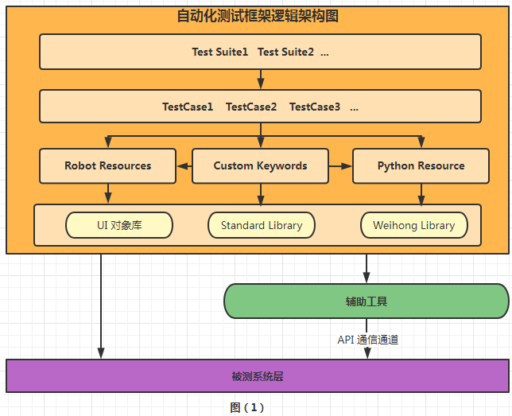
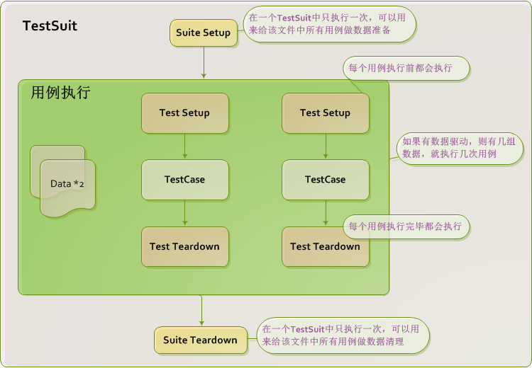
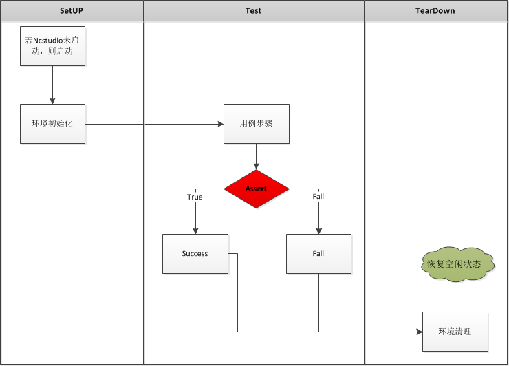
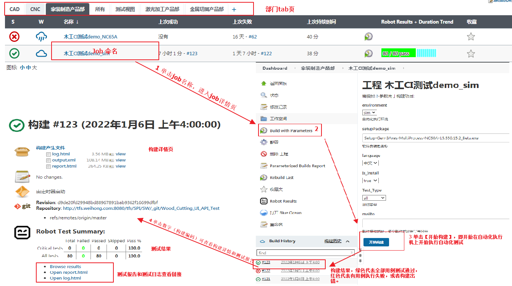
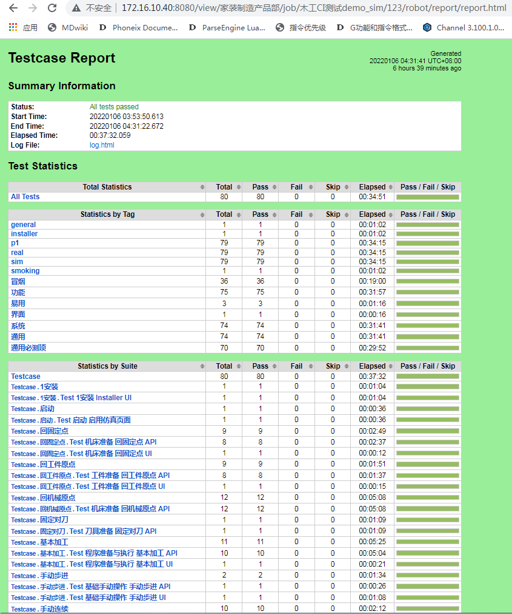

Robot Framework 自动化测试框架使用指导书
版次：2022年8月22日 第2版 类型：技术文件 部门：软件部 上层文件: 软件测试规范 上海维宏电子科技股份有限公司 版权所有
| 文件版本 | 修改前文件版本 | 主要修订内容和原因 | 修订人 | 修订日期 |
|---|---|---|---|---|
| R1 | 新建 | 余晓霞 | 2022/1/5 | |
| R2 | R1 | 1、修改自动化测试用例组织指导的范例； 2、添加测试用例维护的基本原则和案例分析 |
余晓霞 | 2022/8/22 |
1 目的和范围
本指导书就使用 Robot Framework 自动化框架实施自动化测试提供指导。
2 Robot Framework 介绍
2.1 自动化测试介绍
自动化测试是相对于手工测试而存在的，主要是通过所开发的软件测试工具、脚本等来实现模拟手工操作。具有良好的可操作行、可重复性和高效性等特点。自动化测试是软件测试中提高测试效率、覆盖率和可靠性的重要测试手段。
2.2 Robot Framework 介绍
Robot Framework 是一个开源的，基于 Python 的，可扩展的关键字驱动的测试自动化框架，用于端到端验收测试和验收测试驱动开发（ATDD），在自动化测试领域被广泛应用。
3 自动化测试框架
3.1 自动化测试框架设计思想
自动化测试框架以统一的自动化工作模式、测试资产库的不断积累为设计思想。
- 统一的自动化工作模式
自动化测试框架本身固化了一套自动化脚本设计、自动化脚本开发、扩展开发和调度执行的模式和规范，保证了自动化测试实施技术和方法的一致性，降低了自动化测试对具体人员的依赖性，也在一定的程度上减少了因为人员经验技能的差异导致的自动化效果差异。
- 测试资产库不断积累
自动化测试框架注重自动化测试资产的积累、共享和复用。在自动化测试过程中产生的业务关键字、通用关键字、业务流、测试脚本、对象库、测试数据等资产进行有效的组织和存储，并在不同的测试中实现复用。
3.2 自动化测试框架逻辑架构
自动化测试框架逻辑架构如下图（1）所示：

图（1）说明：
- Robot Resources：基于 Robot Framework 语法定义的关键字或资源
- Python Resources：使用 python 定义的关键字资源。
- Custom Keyworks：自定义的关键字，例如：业务通用关键字、工具类关键字、UI操作关键字。
- UI 对象库：存储 GUI 对象的 Xpath 信息；
- Stadard Library：与 Robot Framework 一起分发的测试库，例如： BuiltIn、String、OperatingSystem等。
- WeihongLibrary：根据公司产品特点定义的第三方类库。例如：FlaUILibrary，里面包含的功能有：GUI 的操作、Phoenix 软件的通信、Phoenix 软件日志的查询等。
3.3 自动化测试框架使用指导
3.3.1 自动化测试环境
- 开发语言：Robot Framework、Python；
- Python 版本：3.8.10 （32位）；
- Robot Framework 版本：3.2.2；
- 平台：Windows System；
环境部署操作指导见 wiki(内网)《环境部署》
3.3.2 自动化测试代码管理
自动化测试代码的目录结构如下所示：
自动化测试项目/
├── action #项目通用资源层
│ ├── common #通用关键字
│ │ └── assert.robot #自定义断言关键字文件
│ │ ├── 多语言兼容.robot
│ └── NcConfig # NcConfig 项目通用资源
│ ├── GUI #页面资源
│ ├──pages
│ ├── 机床部件.robot #机床部件页面
│ ├── 打开配置窗口 #关键字
│ ├── 在组件配置窗口选择组件 #关键字
│ ├── 页面元素.robot # 页面控件元素 xpath 维护文件
│ └── Laser # 激光平面项目通用资源
│ ├── GUI #页面资源
│ ├──pages
│ ├── 启动.robot #激光应用程序启动
│ ├── 启动应用程序 #关键字
│ ├── 页面元素.robot # 页面控件元素 xpath 维护文件
│ ├── Phoenix #项目的 Phoenix 寻址或 API 接口维护模块
├── application/libs #测试框架运行相关的工具包
│ ├── TestServer.dll #被测软件通信包
│ ├── TestServer.toc #被测软件通信包
│ └── AutoTest.CIEngine.exe #自动化安装部署被测软件工具
├── data #测试数据
│ ├── NcFiles #刀路文件
├── docs #文件集合
│ ├── keyword.html #flaui 关键字说明文档
│ ├── readme.md #自动化项目说明文档
├── utils # Python 定义的关键字或工具集合
│ ├── SQLLitePlugin.py #SQLLite 相关的关键字
│ ├── FileHandler.py #文件操作相关的关键字
│ ├── Register.py #被测软件注册工具
├── testcase #测试用例
│ ├── 安装 #功能/功能模块
│ │ └── Test_安装_UI.robot #用例套件文件，文件命名格式：Test_功能模块_功能[_其它].robot 中括号部分为可选项。
│ ├── 按默认选项安装软件 #测试用例
│ └── 回机械原点 #功能/功能模块
│ ├── Test_机床准备_回机械原点_API.robot #用例套件文件
│ ├── 绝对值模式且关闭辅助设定基准功能执行单轴回，检测回机械原点结束后位置是否正确 #测试用例
│ ├── 绝对值模式且关闭辅助设定基准功能执行单轴回，检测回机械原点的速度是否正确 #测试用例
│ ├── ...
│ └── ...
说明：
- action： 项目通用资源层，用于维护通用业务关键字、通用工具关键字或页面关键字。
- application ：用于存放测试框架运行相关的工具包，例如与应用程序通信相关的 TestServer.dll，或部署自动化测试环境相关的 AutoTest.CIEngine.exe 等。
- data： 用于存放测试数据。例如刀路文件。
- docs ：用于存放相关文档，例如关键字的说明文档，或其他文档。
- testcase ：属于用例层，存放测试用例脚本文件。
- utils： python 定义的关键字或工具类
3.3.3 自动化测试用例执行流程
用例执行流程如下图（3）所示：

图（3）
用例内部执行流程如下图（4）所示：

图（4）
4 自动化测试用例组织指导
4.1 测试用例维护的基本原则
只有消灭重复的无关紧要细节，让测试清晰表达被测系统功能职责，才能在发生系统需求和实现变更的情况下轻松应对以便降低自动化测试维护的成本。
------ 来源：Dale H. Emery 《Writing Maintainable Automated Acceptance Tests》
为了满足此基本原则，需要做到如下三点：
细节：隐藏无关紧要的细节。
重复：消除重复。
抽取业务通用关键字，通常是消除重复的有效措施。因此要求编写自动化测试用例前，应该对功能业务进行梳理，同时了解系统的通用功能或操作。
1、项目关键字，项目关键字适用于整个项目
4.1 章节优化后的案例中“打开刀路文件”的关键字是系统的通用操作，因为不仅空运行功能执行前需要加载文件，其它很多功能（例如：开始加工、寻边等）执行前也需要加载文件，所以此关键字应该定义为项目关键字（在项目 Action（或 Common）层定义的关键字），而非当前的套件关键字（在测试套件里定义的关键字）。
2、套件关键字，套件关键字适用于当前测试套件
命名：给每一个动作、变量或标题等的本质赋予具有意义的名称。例如测试脚本中含有意义的变量名、关键字和测试用例标题。命名基本原则，如下所示：
- 优先使用中文命名；
- 若存在专业术语，则建议使用专业术语命名，勿自创新名词；
- 命名清晰，且要体现本质的意义；
- 测试套件、测试用例标题、关键字、变量和文档描述的命名格式和规范建议遵循 Robot Framework 官方文档《How To Write Good TestCase》
- 命名格式规范优先遵循公司的《软件测试规范》。
- Robot Framework 执行后，测试报告和测试日志展示的用例标题的格式为：测试套件名称.测试用例标题。例如：测试套件 Test_空运行.robot 里的测试用例“场景测试：空运行 -> 停止 -> 前进 ->后退 ->断点继续”执行后，报告和日志展示的用例标题为：Test_空运行.场景测试：空运行 -> 停止 -> 前进 ->后退 ->断点继续；
- 项目关键字套件里，当定义的关键字只允许当前套件使用时，加 private 前缀，例如：private_激活列表元素。
4.2 测试套件结构
Robot Framework 测试套件主要分为：Setting、Variable、Test Cases、Keywords 四个模块，如下所示。四个模块没有依赖关系。
*** Settings ***
#套件设置，但不仅限于此
#引入库模块，例如：Library RPA.Windows
#引入资源文件，包括变量和自定义的关键字，例如：Resource ../../action/allImports.robot
#执行测试套件的测试用例前，执行初始化操作，例如：Suit Setup 系统环境初始化
#执行每个测试用例前，执行初始化操作，例如：Test Setup 用例执行前环境初始化
#执行每个测试用例后，执行环境清理操作，例如：Suite Teardown 用例执行后环境清理
#设置所有用例的标签，例如：Force Tags 自动应用工艺
*** Variables ***
#套件常量定义
${停止加工指令} Phoenix.G.Ch0.Auto.Stop
*** Test Cases ***
#测试用例模块，顶格的行属于测试用例标题，缩进的内容为测试用例详情
TC001_自动应用工艺设置界面UI验证
#测试用例详情
*** Keywords ***
#自定义关键字
系统环境初始化
#关键字定义
用例执行前环境初始化
#关键字定义
用例执行后环境清理
#关键字定义
4.3 GUI 自动化测试范例
4.3.1 维护对象库
在应用程序（子项目）的GUI模块里维护对象库，对象库维护方式有如下两种：
1、在统一的页面元素文件里维护所有的页面元素定位信息，例如：安装项目 UI 对象的 xpath 维护在 action\Installer\GUI\页面元素.robot 文件文件中。如下所示：
xpath 可通过 FlaUInspect.exe(不仅限于工具) 获取；工具可在内外wiki下载。
*** Variables ***
######################选择安装语言
${语言选择框} //ComboBox[@AutomationId='cbxLanguage'] \| //ComboBox[@AutomationId='languageComboBox']
${请选择安装时使用语言} //Text[@AutomationId='tbPrompt']
${确定按钮} //Button[@AutomationId='btnOK']
${取消按钮} //Button[@AutomationId='btnCancel']
${安装程序_主页} /Window[contains(@Name,'安装程序 - NcStudio')]
${安装程序_语言选择页} /Window[contains(@Name,{0})]
${安装程序_语言选择页_提示语} ${安装程序_语言选择页}/Text[@AutomationId='tbPrompt']
${安装程序_语言选择页_语言下拉列表} ${安装程序_语言选择页}/ComboBox[@AutomationId='languageComboBox']
######################安装警告
${安装程序_安装警告页} ${安装程序_主页}/Window[contains(@Name,'安装警告')]
${安装程序_安装警告页_提示文本框} ${安装程序_安装警告页}/Edit
2、把页面元素维护在其对应页面的里。
4.1.2 维护页面控件操作的动作
把页面控件操作的动作定义在对应的页面动作文件里，每个页控件操作的动作，宜放在相同的一个 robot 文件里，不同页面控件操作的动作，宜放在其对应的单独页面里。例如：安装过程的选择语言页的页面动作，定义在 action\Installer\GUI\pages\选择语言页 .robot 文件里。如下所示：
*** Settings *** #robotframework 的设置模块，通常用于引入第三方库或资源等
Documentation 安装过程语言选择页的页面控件操作的动作定义 #文档说明，可用于说明此文件的适用范围或背景信息等
Library FlaUILibrary #引入 FlaUILibrary 库
Resource ../页面元素.robot #引入资源文件页面元素.robot
*** Keywords *** #定义页面相关的关键字。无缩进的行是关键字名称（即函数名称），紧随其下缩进两个空格的行的集合为函数体
获取界面语言 #关键字名称
${XPath_Chn}= 字符串格式化 ${安装程序_语言选择页} 安装
${Exists_Chn}= Run Keyword And Return Status Element Should Exist ${XPath_Chn}
${IntfLang}= Set Variable If ${Exists_Chn} chn eng
[Return] ${IntfLang} #返回值
选择语言 #关键字名称
[Documentation] ${SpecLang}：指定的语言 #文档说明标签，用于说明关键的描述或背景等信息，在执行日志文件中会被打印
[Arguments] ${SpecLang} # 传参定义
Select Combobox Item By Name ${安装程序_语言选择页_语言下拉列表} ${SpecLang}
Press Key s'ENTER'
在语言选择对话框单击【确认】按钮 #关键字名称
click ${确定按钮}
选择语言并确定 #关键字名称
[Arguments] ${SpecLang}
选择语言
在语言选择对话框单击【确认】按钮
4.2.3 测试用例样例
测试用例文件是在 testcase 目录下维护，例如: 安装应用程序的测试套件 Test_安装_UI.robot 的部分脚本如下所示：
*** Settings *** #设置模块，引入包和资源。设置测试准备和测试后环境清理
Library FlaUILibrary
Resource ../common/allImports.robot
Suite Setup 清理安装环境
*** Variables *** #变量模块
${InstallConfig} 总线
${AppName} ncstudio
*** Test Cases *** #用例模块。无缩进的行为用例标题（即测试函数），紧随其下缩进两个空格的行的集合为测试步骤和预期结果集合
TC001_验证按默认选项安装 #用例标题
[Tags] P1 冒烟 通用必测 测试类型=功能 #用例标签
${datetime0} ToolsPlugin.get current time
#测试步骤
启动安装应用程序
选择语言页.选择语言并确定
选择本地参数页.选择本地参数操作方式并确定
安装完成页.等待安装完成
#预期结果
验证应用程序文件修改时间大于等于 ${datetime0}
验证默认配置名称为 ${InstallConfig}
*** Keywords ***
# 关键字模块，可自定义关键字，此处定义的关键字，适用范围为当前文件
说明：
Test_安装_UI.robot ： 是一个测试套件文件，包含有若干测试用例的集合文件。文件的命名格式为：文件命名格式：Test_[功能模块]_功能_[其它]，其中中括号“[ ]” 里的内容为可选项。
Setting 模块：是 Robot Framework测试套件文件的设置模块，适用范围为此测试套件文件，例如：引入资源和第三方库、声明 Setup 或 Teardown 等；
- Variable 模块：是 Robot Framework 测试套件文件的变量声明模块，适用范围为此测试套件文件。
- 测试用例模块：*** Test Case *** 分隔线下的模块属于测试用例模块。用例标题格式和用例标签定义遵循《软件测试用例设计规范》 。
- 关键字模块：*** Keywords *** 分隔线下的模块属于关键字模块，此处定义的关键字使用范围为此测试套件文件。
4.3 API 自动化测试范例
测试用例样例如下：
*** Settings ***
Documentation 测试需求依据或出处：XXXXX文档
...
... Author: yxx
*** Variables ***
${停止加工} Phoenix.G.Ch0.Auto.Stop
${X轴机械坐标} Phoenix.G.Channels[${channel}].Axes[0].Position
*** Test Cases ***
场景测试：空运行 -> 停止 -> 前进 ->后退 ->断点继续
[Documentation] 验证空运行停止，且操作前进后退后，可以正常进行断点继续
... Author:余晓霞<yuxiaoxia>
[Tags] general p1
开刀路文件 test002.ncex
执行空运行运动正常
执行停止操作正常
执行连续前进运动正常
执行连续后退运行正常
执行断点继续正常
验证空运行过程中和结束后表现正确
*** Keywords ***
执行停止操作正常
set phoenix ${停止加工} true
等待'5s'直到是空闲状态
执行连续前进运动正常
${x0} get phoenix ${X轴机械坐标}
按下前进按钮
等待'5s'直到是运行状态
sleep 1s
释放弹起鼠标右键
等待'1s'直到是空闲状态
${x1} get phoenix ${X轴机械坐标}
should be true ${x0}<${x1}
执行连续后退运行正常
${x0} get phoenix ${X轴机械坐标}
按下后退按钮
等待'5s'直到是运行状态
sleep 1s
释放弹起鼠标右键
等待'1s'直到是空闲状态
${x1} get phoenix ${X轴机械坐标}
should be true ${x0}>${x1}
执行断点继续正常
${x0} get phoenix ${X轴机械坐标}
${y0} get phoenix ${Y轴机械坐标}
按下断点继续按钮
等待'5s'直到是运行状态
sleep 1s
${x1} get phoenix ${X轴机械坐标}
${y1} get phoenix ${Y轴机械坐标}
Log 检查坐标发生运动
should not be equal ${x0} ${x1}
should not be equal ${y0} ${y1}
验证Z轴不动
验证空运行过程中和结束后表现正确
空运行过程，检查Z轴不动和非真实加工
等待空运行结束后，检查轨迹图
空运行过程，检查Z轴不动和非真实加工
验证Z轴不动
${isRealTask} get Phoenix ${真实加工}
should not be true ${isRealTask}
等待空运行结束后，检查轨迹图
等待'300s'直到是空闲状态
验证加工轨迹
4.4 数据驱动测试范例
4.4.1 定义测试模板
测试模板是在需要使用不同的输入或输出数据来测试相同的场景时而产生的，其运行机制支持使用同一个测试模板自动遍历测试不同的数据。
在关键字模块里定义模板，模板的定义方式和关键字的定义方式相同，如下所示：
*** Keywords *** #关键字模块
导入并保存不同格式的文件 #关键字名称，类易于我们常说的函数
[Arguments] ${filename} ${unit} ${except_complete_time} #传参
[Timeout] 10 minutes #超时设置，若执行时长超过10分钟，则超时退出
#操作步骤
导入文件 ${filename} ${unit} ${except_complete_time}
验证文件导入(打开)成功 ${filename}
保存文件 savefile.ncex
验证导入文件后保存成功
导入文件
[Arguments] ${filename} ${unit} ${except_complete_time}
${执行用例前系统最新1条警告日志} 最新'1'条Warning日志
${执行用例前系统最新1条错误日志} 最新'1'条Error日志
set suit variable ${执行用例前系统最新1条警告日志}
set suit variable ${执行用例前系统最新1条错误日志}
导入文件 ${filename} ${unit} ${except_complete_time}
保存文件
[Arguments] ${filename}
保存文件 ${filename}
sleep 1s
${执行操作后系统最新1条警告日志} 最新'1'条Warning日志
${执行操作后系统最新1条错误日志} 最新'1'条Error日志
set suit variable ${执行保存文件操作后系统最新1条警告日志}
set suit variable ${执行保存文件操作后系统最新1条错误日志}
验证导入文件后保存成功
文件应该被保存成功 ${filename}
should be equal ${执行用例前系统最新1条警告日志} ${执行操作后系统最新1条警告日志} 保存过程中出现告警日志
should be equal ${执行用例前系统最新1条错误日志} ${执行操作后系统最新1条错误日志} 保存过程中出现错误日志
4.4.2 数据驱动测试用例样例
*** Settings ***
Template 导入并保存不同格式的文件
Force Tags p2 通用必测
*** Test Cases *** #加工文件名称 文件单位 预计导入完成所需时间（s）
使用英制单位导入dxf文件 5层2.dxf 英制单位 2
使用公制单位导入lxd文件 4001.lxd 公制单位 5
使用公制单位dwg文件 保险耳板.dwg 公制单位 3
使用英制单位nc文件 飞行切割.nc 英制单位 2
使用公制单位dxf文件 不锈钢切割发送.dxf 公制单位 10
使用公制单位plt文件 鸿基.plt 公制单位 5
4.5 案例分析
Robot Framework 主要用于做验收测试，验收测试主要是用来验证系统的某一特定功能是否实现正确。以下给出的反例主要是用来验证业务场景：空运行 -> 停止 -> 前进 ->后退 ->断点继续。但是下列中的测试验证脚本写得很糟糕。优化后的范例可查看 4.3 章节《 API 自动化测试范例》
主要存在如下几个问题：
- 可读性很低，很难理解。
- 用例名称描述不够清晰明确；
- 用例步骤过长，且没有清晰的表述出测试场景的执行步骤，应该隐藏一些无关紧要的细节，例如：“释放弹起鼠标右键”等。
- 测试套件的文档( Documentation ) 信息里重复了测试套件名称（Test_空运行.robot）可以看出的信息。
*** Settings ***
Documentation 验证空运行功能.
...
... Author: yxx
*** Variables ***
${停止加工指令} Phoenix.G.Ch0.Auto.Stop
${X轴机械坐标寻址} Phoenix.G.Channels[${channel}].Axes[0].Position
*** Test Cases ***
空运行—功能-验证空运行过程中触发停止后可执行前进 后退 断点继续
[Documentation] Author:余晓霞<yuxiaoxia>
[Tags] general p1 suit1 skip
Log 前置条件：空运行运动中
${ncfile_path} get ncfile path test002.ncex
文件操作_UI_AUTO.打开加工文件 ${ncfile_path}
按下空运行按钮
等待'5s'直到是运行状态
#运行3s
sleep 3s
Log 执行测试
Log 验证停止
set phoenix ${停止加工指令} true
等待'5s'直到是空闲状态
Log 验证前进
${x0} get phoenix ${X轴机械坐标寻址}
按下前进按钮
sleep 1s
释放弹起鼠标右键
${x1} get phoenix ${X轴机械坐标寻址}
should not be equal ${x0} ${x1}
#按下停止按钮
等待'1s'直到是空闲状态
Log 验证前进之后断点继续功能可用
按下断点继续按钮
等待'5s'直到是运行状态
按下停止按钮
Log 验证后退
${x0} get phoenix ${X轴机械坐标寻址}
按下后退按钮
sleep 1s
释放弹起鼠标右键
${x1} get phoenix ${X轴机械坐标寻址}
should not be equal ${x0} ${x1}
等待'1s'直到是空闲状态
Log 验证后退之后断点继续功能可用
${x0} get phoenix ${X轴机械坐标寻址}
${y0} get phoenix ${Y轴机械坐标寻址}
按下断点继续按钮
等待'5s'直到是运行状态
sleep 1s
${x1} get phoenix ${X轴机械坐标寻址}
${y1} get phoenix ${Y轴机械坐标寻址}
Log 检查坐标发生运动
should not be equal ${x0} ${x1}
should not be equal ${y0} ${y1}
验证Z轴不动
Log 检查不是真实加工
${isRealTask} get Phoenix ${真实加工寻址}
should not be true ${isRealTask}
Log 验证运行结束后的加工轨迹
等待'300s'直到是空闲状态
验证加工轨迹
5 工具介绍
支持 Robot Framework 的 IDE 工具有很多，例如： RobotFramework-ride、Pycharm、VS Code、IntelliJ 等。可根据个人使用习惯进行选择，相关工具的使用指导，在网络上都可以找到。
5.1 集成开发工具 - RobotFramework-ride
RobotFramework-ride 是 Robot Framework 提供的集成开发工具，属于开源项目，可使用ride 编写测试用例和执行测试用例，其中编写用例提供了 GUI 页面编写和文本模式编写两种方式。优点支持关键字自动补全和语法检测、执行用例、新手入门快等，缺点是没有集成版本管理工具（例如： Git、TFS 等）和不适用 Python 的开发和调试。
对于 RobotFramework-ride 的使用手册可在wiki(内网) 《测试工具集》获取。网上也有很多关于ride 的使用指导，这里不再对其的使用指导做介绍。
5.2 集成开发工具 - PyCharm
PyCharm 是 Python 的集成开发环境。PyCharm 安装包，及支持 Robot Framework 用例的执行的插件 intelllibot.jar 的安装指导，可在wiki（内网）《测试工具集》获取。
6 执行测试
6.1 命令行执行
在命令执行 Robot Framework 测试用例，可使用 robot 命令。如下只对其常用的命令做说明，其它命令选项说明可使用帮助命令 “ robot -h ” 查看。
执行一个用例
robot -t "测试用例名称" 测试套件文件.robot按用例文件执行
robot 测试套件文件.robot执行目录下的所有用例
robot 测试套件文件目录按 tag 执行用例
robot -i P1ANDSmoking -e SkipORLS3000 测试套件文件目录-i : 表示包含；
-e：表示排除；
AND：表示逻辑与关系；
OR：表示逻辑或关系；
命令意思是：执行同时包含 P1 和 Smoking 标签的用例，并且排除包含有 Skip 或 Ls3000 的标签的用例。标签的值大小写敏感。
变量参数
robot --variable env:仿真 --variable install_package_name:Setup-Gen-NC60A-15.550.14.1_Beta.exe 测试套件文件目录
6.2 CI 执行
CI 是基于 Jenkins 实现的。Jenkins 地址：http://172.16.10.40:8080/；使用域账号登录。操作步骤如下：
1、在任务（job）列表单击任务名称，进入任务详情页；
2、单击左侧导航栏的【Build whith parameters】，右侧展示构建参数信息
3、录入构建参数信息，单击【开始构建】按钮，若执行机空闲，则立即开始执行自动化测试，否则等待到执行机空闲之后才开始执行自动化测试。
5、构建结果或其他信息可通过构建详情页查看，如下图（5）所示。
图（5）
经验谈：
当想查看构建过程日志时，在构建详情页通过右侧的菜单按钮【控制台输出】查看构建过程日志，控制台输出功能提供构建过程日志的实时输出。
7 查看日志和测试报告
Robot Framework 提供有 html 页面查看执行日志（log.html）和测试报告(report.html)。

图（6）测试报告
编制：余晓霞 审核： 批准：
审批链接：